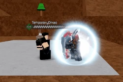
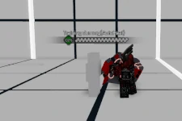
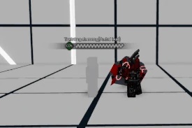
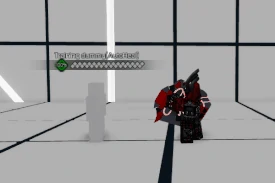

Citadel
Augeus Atticus, or more commonly known as Citadel is a Tank/Zoner hybrid class aligned with the Phantom faction. Wielding a magnetic gauntlet that controls a high-tech shield with a mechanical eye, Citadel is a unique take on the Tank archetype. His moveset has a higher priority of crowd control rather than overwhelming them from up close. While his conventional combo game is short and to the point, his highly interactive crystals allow for some creative strings that can spell doom for the unprepared. Should the proper precautions not be taken, you might find that after spending so much time getting past Citadel's zoning, you've still got a whole tank to deal with afterwards.
Lore
Going under the fake alias of Augeus Atticus, Citadel is the human shield of the Bulwark Division. Whenever Phantom cannot afford to have an area be compromised, Citadel is deployed to make the territory behind him unconquerable. Invisibly, Citadel's work is assisted by the mechanical eye hidden in his shield. It houses an intelligent AI engineered by Phantom that provides high-level communication with its owner, both in and out of battle. This eye can also "manifest", or materialize, advanced constructs such as Citadel's shield. These constructs can also be dematerialized at will, allowing Citadel to go incognito with merely the eye in his pocket, then summon the shield from the eye when the time is right. Citadel has grown exceptional in his line of work. He has only suffered defeat once, at the hands of none other than the Revenant -- and even then, he made sure the warrior had a hard time. Ever since the he fought Revenant, Citadel was working on ways to improve his shield. However, at some point, he was confronted by Virtue and Kurai, and the two fought. When Citadel was already tired out and beaten, Kurai would have killed him, only to be stopped by Virtue, who noticed that Citadel was doubting the actions of Phantom. So then, Citadel was spared. Ever since that confrontation, Citadel was wondering: what were the Phantom's true motive? Why did they target innocent people? Citadel would later leave the Phantoms, for both the future of his inventions, and for his family.
Passive
Phalanx
Citadel is granted 50% more Shield Health, for a total of 150.
Universal Skills
Guard Break
 100 damage, A Scaling, 5 second cooldown, requires 1 Heat
100 damage, A Scaling, 5 second cooldown, requires 1 Heat
(GROUND) - Citadel hooks his opponent in the groin with the side of his shield, causing the opponent to hunch over in pain. Prompts an opportunity to combo.
If this attack comes into contact with one of SP3's crystals, it will nudge the crystal forwards a medium distance.
Launcher
80 damage, B Scaling, 6 second cooldown(GROUND) - Citadel performs a rising shield bash, sending him and his opponent diagonally up into the air. Has Lv. 1 Super Armor during active frames.
If Citadel comes into contact with one of SP3's crystals, he will push the crystal diagonally upwards into the air.

Light Autocombo (L.AC)
4 inputs, 214 damage, A Scaling, will nudge SP3 crystal forwards
Heavy Autocombo (H.AC)
1 input, 70 damage, C Scaling, blinds the opponent, Magic attack
